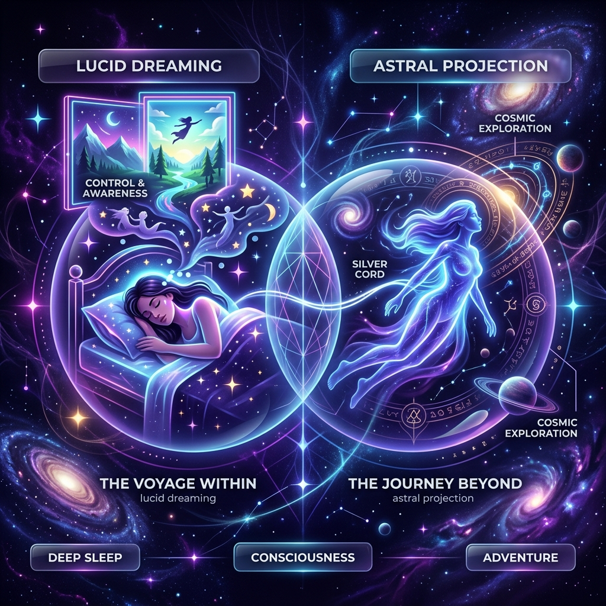

My Library
Quickstart Guide for 🔮 Mastering Human Consciousness
These links & explanations contain some of the most useful spiritual & conscious enhancement knowledge I have come across. I tend to look for information and techniques that I may immediately apply to my daily behaviors, rituals, and mindsets in order to garner my personal subjective experience of their effects.
My thoughts are rooted in the fusion of ancient spiritual sciences, magic plant medicine, and modern molecular sciences revolving around upgrading our brain and exterior consciousness.
The Most Powerful Tools & Practices
- Kundalini Yoga for Postural Mastery & Enhanced Intelligence
- Breathwork & Pranayama, manipulation of our breath, and lifeforce
- Micro-dosing Psilocybin & THC
- Cold Temperature Therapy
- Fine Skill Training / Deepening Hobbies
- Neural Retraining through Mindfulness and Exploring Failure
- Self-compassion for transmuting pain into strength
- Concentration exercises to increase cognition and the psychic powers
Top Links & Resources
Advanced Yogic Practices
Most Powerful Interpretation to Date
The Mind Illuminated
Best Meditation Guide! Rooted in Neuro and Psychedelics
Eight Circuit Model of Consciousness
From Prometheus Rising (Biology of Enlightenment)
Mastering the Core Teachings of the Buddha
Psychic Powers, True Wisdom. Juiciest interpretation of spirituality.
Power vs. Force
Kinesiology / The Power Scale of Human Consciousness!
The Sciences of Kundalini
Our Energy-body / Creative Spirit
Wim Hof Technique
Breathwork/Pranayama/Purifying the Nervous System
The Power of Now
Classic Spiritual Overview (PDF)
The Law of One
Channeled Entity Speaks About the Laws of the Universe
The Fire Kasina
Concentration Exercise to Develop Psychic Vision / Powers
Astral Projection & Lucid Dreaming

Astral Projection and Lucid Dreaming are Meditative attainments classified under the art and science of Dream Yoga. For our ancestors, this was life, and it was normal to live in both the dream world and the living world.
Your Astral Body (Electro-spiritual Form) is independent of any mental faculties or disabilities. Your awareness and consciousness are literally powered and the cause of extra-dimensional forces that precede your human form.
Method Overview
- Assume your pose (Fetal, Lotus work best).
- Take 7 slow, deep breaths to signal your nervous system to begin rest mode.
- Begin relaxing all muscle groups to collect bio-electricity into your spinal cord and Third Eye.
- Begin noticing what it means to "move awareness" to connect with True Imagination.
Reigning in the overthinking Mind will happen automatically as you play around with your True Imagination. Some of you will intuit faculties of telepathy, manifestation, and chakra opening.